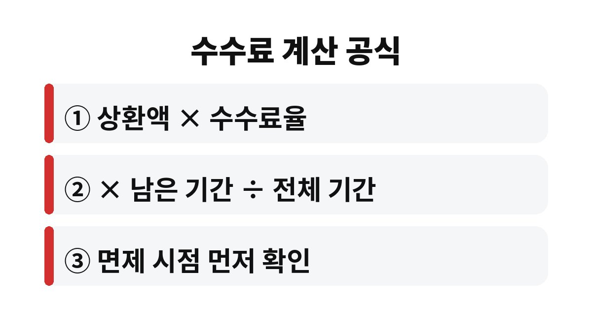
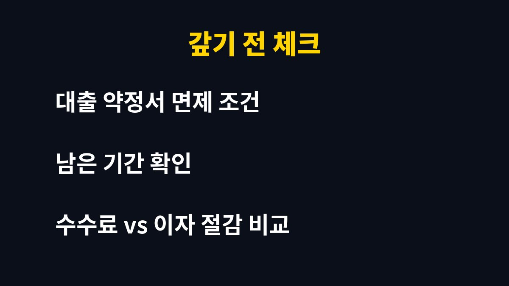

중도상환수수료 면제 시점 확인, 헷갈리기 쉬운 부분을 먼저 짚고 순서대로 정리했습니다.
중도상환수수료는 대출을 만기 전에 갚을 때 은행에 내는 벌금 같은 돈이고, 예를 들어 수수료율이 1%라면 1억 원을 한 번에 갚을 때 최대 100만 원까지 나올 수 있다. 대출을 일찍 갚으려는 직장인이라면 이 돈이 정말 내야 하는 돈인지 궁금하지 않으세요?
여윳돈이 생겨서 대출부터 줄이려던 분들이 의외로 이 수수료를 모르고 갚았다가 억울해합니다. 오늘은 중도상환수수료가 어떻게 계산되는지, 언제 면제되는지를 쉽게 풀어 볼게요.
은행은 대출을 해주면서 앞으로 받을 이자를 계산해 둡니다. 그런데 고객이 중간에 갚아 버리면 그 이자 수입이 사라지죠. 그 손실을 보전하라고 받는 돈이 바로 중도상환수수료입니다.
그래서 대출 초기에 갚을수록 수수료가 크고, 만기에 가까울수록 줄어드는 구조가 일반적입니다. 대출을 받은 지 얼마 안 됐는데 갚는다면 은행 입장에서는 손해가 큰 셈이니까요.

기본 공식은 간단합니다. 갚는 금액에 수수료율을 곱하고, 여기에 남은 대출 기간을 전체 대출 기간으로 나눈 값을 곱합니다. 쉽게 말해 많이 갚을수록, 만기가 많이 남았을수록 수수료가 늘어납니다.
예를 들어 수수료율이 1%이고 전체 기간 중 절반이 남은 상태에서 1억 원을 갚는다면 약 50만 원 정도가 됩니다. 남은 기간이 거의 전부라면 100만 원에 가까워지고요. 위 숫자는 이해를 돕기 위한 가정 예시이고, 실제 수수료율은 대출 상품과 금융사마다 다릅니다.
여기서 많은 분이 놓치는 부분이 있습니다. 수수료는 '남은 기간'에 비례하기 때문에, 같은 금액을 갚더라도 어제 갚는 것과 몇 달 뒤에 갚는 것의 수수료가 다릅니다. 대출 만기가 길게 남은 주택담보대출이나 신용대출일수록 이 차이가 눈에 띄게 벌어지는 편이에요. 그래서 갚기로 마음먹었다면 날짜를 하루 이틀 미루는 것만으로도 수수료가 줄어드는지 꼭 계산해 보세요.
또 하나, 대환대출로 갈아타려는 경우에도 기존 대출의 중도상환수수료가 발생할 수 있습니다. 새 대출의 금리가 낮아서 이자가 줄어도, 기존 대출을 정리하며 내는 수수료가 그 이득을 깎아 먹을 수 있어요. 갈아타기 전에는 줄어드는 이자 총액과 수수료를 반드시 비교해야 합니다.
네, 맞습니다. 보통 대출 실행 후 일정 기간이 지나면 수수료를 받지 않는 경우가 많습니다. 가계대출은 대출 후 3년 안에 갚을 때만 수수료를 물리는 상품이 일반적이라서, 3년이 지나는 날짜를 하루만 앞두고 갚아도 수수료를 내는 억울한 상황이 생길 수 있어요.
또 약정서에 따라 연간 일정 한도 안에서는 수수료 없이 갚을 수 있게 해주는 곳도 있습니다. 부분 상환이라면 이 한도를 먼저 확인해 보세요. 이 내용은 금융사마다 달라서 반드시 내 약정서를 봐야 합니다.
이건 비교가 필요해요. 갚으면 줄어드는 이자와 지금 내야 하는 수수료를 나란히 놓고 보는 겁니다. 금리가 높은 대출일수록, 남은 기간이 길수록 이자 절감액이 커서 수수료를 내고도 이득인 경우가 많아요.
반대로 면제 시점이 한두 달 뒤라면 조금 기다렸다가 갚는 게 수수료도 아끼고 이자 부담도 크지 않아서 유리할 수 있습니다. 결국 핵심은 갚기 전에 면제 날짜와 수수료율을 먼저 확인하는 것입니다.
정리하면 순서는 이렇습니다. 첫째, 대출 약정서나 앱에서 수수료율과 면제 기간을 찾습니다. 둘째, 갚을 금액과 남은 기간으로 수수료를 대략 계산합니다. 셋째, 갚았을 때 줄어드는 이자와 비교합니다. 이 세 단계만 거치면 괜히 수수료로 돈을 날리는 일은 크게 줄일 수 있습니다. 모르면 고객센터에 상환 예정일을 말하고 예상 수수료를 문의하면 바로 알려주니 부담 갖지 마세요.

| 확인할 것 | 어디서 보나요? |
| 수수료율 | 대출 약정서·앱의 상품 안내 |
| 면제 시점 | 대출 실행일 기준 기간 |
| 연 면제 한도 | 약정서 중도상환 조항 |
혹시 지금 대출을 갚을 계획이 있으신가요? 내 대출의 면제 날짜가 언제인지 한 번 확인해 보시고, 이런 생활 금융 정보가 도움이 됐다면 구독해 주세요.
※ 본 글은 일반적인 정보 제공이며 투자·금융 상품 권유가 아닙니다. 실제 수수료는 금융사 약정서를 확인하세요.